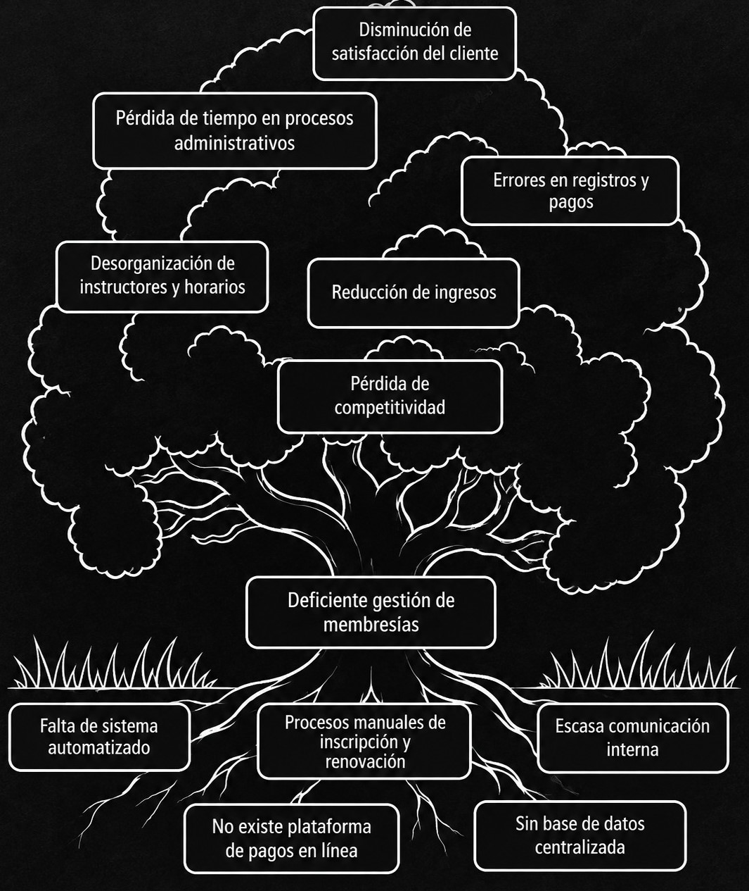

Asignatura
INF-241 Análisis y Diseño de Sistemas.
PROYECTO ACADÉMICO · INF-241
Análisis y diseño de un Sistema De Registro para el Gimnasio Fuerza y Hierro.
CONÓCENOS
En esta página presentamos el proceso de análisis y diseño de nuestro proyecto, enfocado en el registro para El gimnasio Fuerza y Hierro mediante una solución informática.
INF-241 Análisis y Diseño de Sistemas.
M.Sc. Miguel Cotaña Mier
TRABAJO COLABORATIVO
BASES DEL PROYECTO
A continuación se presentan los aspectos principales que dieron origen a nuestra propuesta de desarrollo.
En esta web se puede observar el análisis y diseño de un sistema web para el gimnasio Fuerza y Hierro, cuyo propósito es optimizar el proceso de registro, control y seguimiento de membresías mediante la implementación de una plataforma virtual. Este sistema permitirá a los usuarios registrarse en línea, realizar pagos de manera digital, consultar información sobre sucursales y agendar consultas con especialistas. Además, brindará herramientas a la administración e instructores para gestionar información de miembros, horarios, reportes e ingresos de forma eficiente. Con esta iniciativa, se busca integrar la gestión administrativa y la experiencia del usuario en un entorno moderno, seguro y accesible desde cualquier dispositivo conectado a internet.
En la actualidad, la mayoría de gimnasios continúan utilizando sistemas manuales o herramientas no integradas para el manejo de inscripciones, pagos y control de membresías. Esta situación genera pérdida de tiempo, errores humanos y dificultades en el seguimiento de los clientes activos. Fuerza y Hierro ha identificado la necesidad de evolucionar hacia la digitalización de sus procesos administrativos y de atención al cliente. El crecimiento de la demanda de usuarios y la expansión de sucursales exigen un sistema eficiente que permita centralizar la información y automatizar tareas como la renovación de membresías, generación de reportes y control de instructores.
El gimnasio Fuerza y Hierro enfrenta dificultades en la gestión y control de sus miembros debido a la ausencia de un sistema automatizado que centralice la información. Actualmente, los procesos de inscripción, pagos, control de vencimientos y reportes se realizan de manera manual, lo cual provoca errores frecuentes, demoras en los trámites y pérdida de datos importantes. Asimismo, los usuarios no cuentan con una plataforma virtual donde puedan registrarse, pagar sus membresías o consultar información sobre servicios y sucursales. Esta falta de digitalización limita la accesibilidad y reduce la competitividad frente a otros gimnasios que ya ofrecen servicios en línea.

HOJAS (Efectos) TRONCO (Problema central) RAÍCES (Causas)
¿Cómo puede el gimnasio Fuerza y Hierro mejorar la gestión de sus membresías, pagos, instructores y reportes mediante la implementación de un sistema web que automatice estos procesos y facilite la inscripción y pago en línea de sus miembros?
Diseñar e implementar un sistema web de registro y gestión de membresías para el gimnasio Fuerza y Hierro que permita optimizar los procesos de inscripción, pago y control administrativo, garantizando mayor eficiencia, accesibilidad y satisfacción del cliente.
Objetivo general: Desarrollar un sistema de registro y gestión de miembros en línea para el gimnasio Fuerza y Hierro, que permita realizar inscripciones, pagos digitales, control de membresías y generación de reportes administrativos de manera automatizada.
Objetivos específicos:
PLANIFICACIÓN
El proyecto se organiza en diferentes etapas que permiten comprender el problema y diseñar una solución mediante el Diagrama de PERT.

Contamos con una gran variedad de pesas de distintos kg.
Contamos con máquinas actualizadas para cualquier rutina de cardio.
Nuevas coreografías todos los días con instructores de la más alta calidad.
Rutinas diarias con alta demanda por sus resultados efectivos.
Contamos con profesionales en el área de la salud que te guiarán a una dieta saludable.
Contamos con instructores de alta calidad, con experiencia, seguros y efectivos.